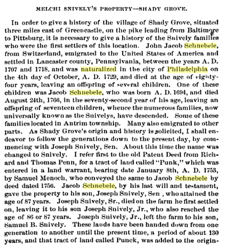

French Family Association
The Official Website of the Surname French
Andrew Snivelys home,
built in 1781 in Antrim twp, Franklin Co., PA, on the site of his fathers,
Jacob Snively, log cabin built ca. 1735.
Chart #30, Louisa French, 1725
Lancaster Co., PA and Antrim twp., Franklin Co., PA
Frederick Co., MD and Washington Co., MD
This chart updated by Mara French on 7/25/11. Numbers in brackets [ ] show sources and refer to the bibliography at the end of this chart. An asterisk (*) shows continuation of that line. Send any corrections or additions to this chart to marafrench@mindspring.com. Revisions: 2009, 2011.
NOTE: Please make any corrections or additions to this chart that you can and send them to Mara. Refer to this chart by chart number so that your information will be understood. Refer to each family member by their number. Additions are greatly appreciated. This chart has been widely distributed and is constantly being updated. Although this is not my line, I make additions to it, and you will be notified when your data or someone elses data is added.
Contents
FFA Charts Related To This Chart
Immigration to Pennsylvania in the Early 1700s
Snively and French Families
The Snively and French Families Met in Pennsylvania
John Snively and Louisa French
The Schnebele / Schnebeli / Schnebley / Snively / Savely / Snavely Family
Four Snivelys Married Four Frenches
Cemeteries and Graveyards
Johnson Graveyard near Shady Grove
The Antrim Mennonite Church and Cemetery
Snively Family Graveyard, Antrim, Franklin Co., PA
Eberly Family Graveyard, a.k.a. Shinham Graveyard
Cedar Hill Cemetery, Greencastle, Antrim, PA
Shively Cemetery, Jefferson Co., KY
Background Material
DNA Test Data for Louisa French
DNA Test Group 4 Test Results (old website)
DNA Test Group 4 Test Results (new website)
DNA Test Group 4 Cross-Reference Chart
DNA Test Group 4 Descendant Chart to Testee
Introduction
When I first started numbering FFA charts, I included both male and female lines; hence, this female line of a former FFA member. Ive decided to keep these female lines in place so as not to confuse the numbering system. We have found Louisas ancestry, that of Jacob French of FFA Chart #195.
FFA Charts Related To This Chart
Several DNA tests match each other and are grouped together as DNA Test Group 4:
FFA Chart #10,
John Peter French and William Lewis French – DNA Test Group 4
FFA Chart #23,
Isaac French – DNA Test Group 4
FFA Chart #31,
Henry French – DNA Test Group 4
FFA Chart #129,
Peter French – no test
FFA Chart #136,
George French – DNA Test Group 4
FFA Chart #186,
Philip French – DNA Test Group 4
FFA Chart #193,
David French – DNA Test Group 4
FFA Chart #194,
Jonathan French – DNA Test Group 4
FFA Chart #195,
Jacob French – DNA Test Group 4
Immigration to Pennsylvania in the Early 1700s
The Greencastle areas first settlers were mainly Scotch-Irish, with some Germans and Swiss, who made their way to the Conococheague Settlement in the early 1730s. The area was considered part of Lancaster County until 1741, when Antrim Township was sectioned off. At that time, the township included all of present-day Franklin County except Warren, Metal, and Fannett townships. John Allison, a colonel in the Cumberland County militia, founded Greencastle in 1782. Col. Allison laid out 256 lots in four blocks around the square and sold them for about $8 each. By an act of the Pennsylvania Assembly, the town was incorporated as a borough on March 24, 1805, with 800 residents within its geographical boundaries. Within 70 years, the boroughs size doubled and its population grew to 1,700.
Franklin County was established on the 9th Sept. 1784, having previously been the southwestern part of Cumberland co., known as the Conococheague* settlement. The old settlers pronounce this word Conny-co-jig. See http://genealogytrails.com/penn/franklin/history/1843history.html 1843 History of Franklin County, Pennsylvania, contributed by Nancy Piper.
People worked as farmers, tanners, cabinetmakers,
machinists, blacksmiths (as were the French family), coopers, cobblers,
hatters, weavers, printers and artisans of the building trades. Early residents
were attracted to the area by its fertile soils and the quest for religious
freedom. See http://www.greencastlepachamber.org/history.html.
Greencastle, Antrim, Franklin Co., PA, named for Greencastle in Northern Ireland in the county of Antrim where many of the settlers of this area first came in the 1700s.
The Snively and French Families Met in Pennsylvania
The first generation of the French family to immigrate to Pennsylvania ca 1728 met and married the first generation of the Shively family to immigrate to Pennsylvania in 1734. Both families settled in Lancaster Co., PA, moved westward to Antrim township, Franklin Co., PA early on by crossing the Susquehanna River. The marriages:
Johann Jacob Schnebele m.
Louisa French in Pennsylvania
Magdalena Schnebele m. Jacob French in Pennsylvania
Mary Shively m. George French in Pennsylvania
Margaret Snively m. David French in Pennsylvania
John French was the first French emigrant who immigrated in 1728 to Pennsylvania, and had at least 4 children born 1730-1742 in Pennsylvania (listed below). John French was born ca. 1705 in England or Scotland and never lived in Germany. Ancestry.com does not show any French born in Germany between 1720-1740. His children:
Jacob Sr.
Louisa
George Sr.
John
John Snively and Louisa French
Louisa French, was born in Antrim twp., Franklin Co., PA, ca. 1732, m. Johann Jacob Schnebele in 1743 in Franklin Co. PA. Johann Jacob Schnebele was b. 1720 in PA according to the U.S. and Intl Marriage Records, 1560-1900, which is only an approximate date.
The Schnebele / Schnebeli / Schnebley / Snively / Savely / Snavely Family
Many books exist on this family from Switzerland, each with a slightly different version of their genealogy, which are listed in the Bibliography. Examining each version, date it was written, and the accuracy of other information in each book, I have come up with this scenario to the best of my ability. The archaic way of writing in those days (not going in order and using the reign of Kings as dates) was difficult to figure out.
The Schnebele family was the first family to emigrate to the village of Shady Grove situated 3 miles east of Greencastle.
Fifty-three families, numbering in all two hundred persons, emigrated from Rotterdam, Holland and landed at Philadelphia, PA on 29 Sep 1727, including the Schnebele, Haggy, Leaman, Lesher, and Frantz families, all related and of the same neighborhood. They came over in the ship James Goodwill. The Frantz family was in no way connected with the French family who emigrated from England or Scotland. The name Miller appears on the passenger list, a name connected to the French family in Pennsylvania. A father, son, and daughter of the Schnebele family had already emigrated to Pennsylvania in 1717.
1. Johann Jacob Schnebele, b. 7 Dec 1645, m. Barbara Habersaat, she d. 21 Feb 1711. Jacob lived in Mannheim, Germany in 1717 as a Mennonite widower. Did not emigrate to Pennsylvania.
2. Johann Jacob Schnebele, b. 25 Nov 1670, in Affoltern am Albis, Canton Zurich, Switzerland, m. unk, d. by 1714 at age 43. He was a Preacher. emigrated from Switzerland to Lancaster Co., PA, ca. 1717, and was naturalized in Philadelphia 14 Oct 1729, d. 1754 at the age of 84 years, leaving several children.
3. Johann Jacob Schnebele,
b. 1694 in Ibersheim, Rheinhessen,
Germany, d. 24 Aug 1766 in Pennsylvania, age 72, immigrated to Pennsylvania ca.
1717 with his father. Johann deeded his land in his will to son Joseph Snively, Sr.
3. Anna Maria Schnebele, b. 1698 in Germany, d. 1776,
m. Hans Georg Bachman, immigrated to Pennsylvania in 1717.
4. John Snively, b. 1720 in
Pennsylvania, d. 1791 or 16 Mar 1795 in Antrim, Franklin Co., PA, m. Louisa
French in 1762.
4. Christian Schnebele, b. 15 Aug 1731, d. 16 Mar
1795, at 65 years old. He m. Margaret Washabaugh
ca. 1761. He had 8 children, the second being John Schnebele,
b. 25 Feb 1766, m. Anna Hege on 24 Oct 1794. John
died in Jul 1844 at age 79 years. Anna d. 17 Aug 1852 at 77
years.
Today Affoltern is the smallest city in Switzerland. Before 1700, Affoltern had a population of less than 250. In 1695 it was reported at Affoltern that Hans was a 'Taufer.' He may have lived at Ibersheim, Pfalz. He wrote in his Bible in 1696, 'This Bible belongs to Hans Jacob Schnebeli of the Ibersheimerhof and was received from my father-in-law.' The next inscription states that 'This Bible belongs to Wendelteiss Schnebelli and is in love so recorded in the year of our Lord 1708.' (This Wendelteiss (or Matheiss) may have been a son or son-in-law of Hans Jacob born about 1697 and who died young.) Hans Jacob possibly received the Bible as a wedding present. The Bible was next in the possession of Anna Maria Schenebeli who married Hans Georg Bachman and left from Ibersheim in 1717 for Pennsylvania. He may be the Hans Jacob Schnebeli who signed letters at Mannheim, Germany, in 1706, 1717 and in 1727 as a Mennonite minister. In a letter dated 26 Jul 1710, Martin Egli, Hans Blimm and Christian Rupp of Alsace asked Hans Jacob Schnebeli and Tillman Kolb (probably Sr.) in the Pfalz (an area in Germany called the Rheinland-Pfalz) to assist 30 Anabaptists prisoners from Switzerland. He signed a letter at Ibersheim in 1709 and a letter at Mannheim in 1715 as a leader of the Mennonites there. In 1710 he received a letter as a Mennonite elder in the Pfalz."
For more information, see http://www.phillipsplace.net/genealogy/ps01/ps01_016.html. This early document has no mention of the surname French; however, it does mention the surnames Franz and Fuchs, which are entirely different families. Because it does not mention French is a good indication that the French family never lived in Germany.
SCHNEBELE
Anna (1675 - 1706)
Anna Maria (1698 - 1776)
Hans (~1678 - ~1682)
Hans Jacob (1670 - 1714)
Hans Rudolph (1685 - )
Heinrich (1680 - )
Jacob (1618 - )
Jacob (1673 - ~1713)
Jacob (~1700 - 1781)
Johan Jacob (1645 - )
Johannes (1682 - )
Jos (1672 - 1712)
Regina (1689 – 1702)
Index of Names: http://www.phillipsplace.net/genealogy/wc_idx/idx001.html
Four Snivelys Married Four Frenches
Snively Family
|
French Family
|
|
*Johann Jacob Schnebele, b. 21 Dec 1694 in Switzerland, moved to the Palatinate in SW Germany, immigrated to Pennsylvania as early as 1717 and was among the earliest emigrants to PA, settling in Lancaster Co., PA. He was naturalized in Philadelphia on 14 Oct 1729, m1. Anna Newcomer ca. 1730, m2. Barbara Eberle on 14 Apr 1736, d. 24 Aug 1766 in Mannheim twp., Lancaster Co., PA. Both names Barbara and Eberle were used later in the Schebele and French families. He was a Mennonite, probably 23 years old, when he immigrated with his father, Hans Jacob Schnebele and sister Anna Maria Schnebele, to PA and settled in Lancaster Co., PA. He crossed the Susquehanna River and moved westward at a very early period. He was one of the first settlers in the Conococheague Valley taking up a large tract of land in what is now Antrim township, Franklin Co., east of Greencastle. It is claimed that he built his cabin in 1734 on the site of the stone mansion built by his son Andrew in 1781. The Rev. Michael Schlatter, the father of the Reformed church in the United States, visited him there in 1740 speaking of him as an honest Swiss. He was twice married. He then moved to Washington Co., MD. Another reference says their father was Michael Shively, who arrived aboard the Palatine Ship St. Andrew with John Stedman as master. The ship had come from Rotterdam and Cowes, on the Isle of Wright, England, and had arrived in Philadelphia on 27 Oct 1738. Children by first wife, Anna Newcomer: |
*John French, b. 1705 in England, immigrated directly to Pennsylvania on 27 Feb 1728 at age 23. John m. Mary in Franklin Co., PA (in a very German-populated area) to Mary about 1730. They had at least 4 children: Jacob Sr., Louisa, George Sr., and John, all born between 1730 and 1742 in PA. He may, of course, have had more children. NOTE: We have recent proof that the father of these 4 children is Jacob French. See FFA Chart #195. Johns children are shown below lined up with the Snively they married in yellow: Louisa Jacob Sr. George John |
|
1. John Jacob Snively, b. ca. 1730 in Mannheim, Lancaster,
PA, d. 21 Jan 1792 in Antrim, Franklin Co., PA, |
1. Louisa French, b.
ca. 1732 in PA, m. John Jacob Snively ca. 1754 in
PA, died after 1792, a widow, FFA Chart #30. |
|
1. Michael Snively, b. 25 Jan 1757 |
|
|
2. Jacob Snively, b. 1764, d. 2 Aug 1802, m. Eva Hays in Antrim, PA |
|
|
3. Barbara Snively, b. 14
Feb 1758 in Antrim, PA, d. 14 Feb 1836 in Lancaster Co, Ohio, m. William
Jackson |
|
|
4. Margaret Anna Snively, b. 29 Jul 1755. |
|
|
5. John Snively, b. in
Washington Co., MD, m. Mary Miller. They had Jacob who m. Ruth Lelly, Joseph, |
|
|
2. Christian Snively, b. 15
Aug 1731, m1. 1762 to Margaret |
|
|
1. Margaret Snively, b. 1767 in Bethel twp, Lancaster Co., PA, m. David French on 20 Dec 1790 in Jefferson Co., KY. (see column at right) |
|
|
3. Magdalena Snively, b. ca. 1732, m. Jacob French. m. Jacob French Sr. (see column at right) |
2. Jacob French Sr.
b. ca. 1730-31, m. Magdalena Snively, d. 1788 WV, FFA Chart #195 |
|
4. Eve Snively, b. 1724. Eve or Eva was allegedly captured by Indians near Bedford, PA and taken to the Detroit area, where she remained for 12 years before being released. This could have occurred during the height of the French and Indian Wars. She had a brother-in-law with the last name of Householder who was killed by Indians. He was married to her sister Anna. |
1. Barbara French, m. Helm & Lephart, FFA Chart #195 |
|
5. Anna Snively, b. ca. 1735, m. ______ Householder. |
2. Mary French, m. Reed, FFA Chart #195 |
|
6. Henry Snively. |
3. George French Sr., b. 1757 WV, m. Maria Grantham? |
|
*Johann Jacob Schnebele, b. 21 Dec 1694 in Switzerland, m2. Barbara Eberle on 14 Apr 1736, he d. 24 Aug 1766, she d. 1793. |
4. John French, m. Catherine Hedges to KY, FFA Chart #194 |
|
Children by second wife, Barbara Eberle: |
5. Jacob French Jr., b. 1760 m. Catherine Ward, WV |
|
6. Henry Snively, b. 1739, d. 1802, m. Barbara Whitemore. The 1790 census of Franklin Co., PA lists Henry with 8 people in his household. |
6. Elizabeth French, m. Joseph Lamon, FFA Chart #195 |
|
7. Fannie Snively, b. 16 Oct 1742 |
7. Henry French, b. 12 Mar 1755, m. Elizabeth Ersom, KY, FFA Chart #31 |
|
8. Catherine Snively I, b. 28 Oct 1744 in Antrim Twp., PA, died young. |
NOTE: We are unsure at this time who the father of David is. He could have been born in 1765. 1. David French, b. 1772 in Berkeley Co., WV, migrated to Ohio Co., KY, m2. Margaret Shively on 20 Dec 1790 in Jefferson Co., KY, FFA Chart #193. The 1850 census of Ohio Co., KY states that Margaret Shively French was living with their son John French, age 40; David died in 29 Dec 1819 in Ohio Co., KY. |
|
9. Susanna Snively, b. 16 Mar 1746, m. Dreaver. |
2. . . . plus many more children of Henry |
|
10. Joseph Snively, b.
1748, d. 1833, m. 1771 Magdalena Stoner, |
|
|
11. Andrew Snively, b. 1751, d. 1813, m1. 1775 to Susannah Funk, m2. 1789 to Mary Magdalena Shenk, supposed to be one of two youngest sons. The 1790 census of Franklin Co., PA lists Andrew Snively with 13 members in the household. |
|
|
12. Elizabeth Snively, b.
21 Feb 1754, supposed to be one of two |
|
|
13. Anna Mary Snively, b. 29 Jul 1755, m. Good. |
|
|
14. Michael Snively, b. 25 Jan 1757, died unmarried. |
|
|
15. Mary (Molly) Elinor Snively, b. 27 Nov 1758 in Shady Grove, Franklin Co., PA, m. George French on 10 Oct 1789 (see column at right) |
3. George French Sr., b. ca. 1735-1740, 1762 in WV, m. Mary Elinor Shively, on 10 Oct 1789 in Berkeley Co., VA. |
|
16. Catherine Snively II, b. 27 Jan 1760, supposed to be one of two youngest daughters. |
|
|
17. Christiana Snively, b. 14 Nov 1761 |
4. John French, b. ca. 1742 in Chansford, York Co., PA, m. Marie Barbara Schmeiss. Children: Elizabeth, Peter, George, John, and Catharine -- moved to TN (FFA Chart #129). |
|
18. Jacob Snively, d. after 1766 |
|
|
19. Barbara Snively, b. 22 Nov 1765. Lived alone in 1790. |
|
* The Immigrants
Jacob Schnebele
Johann Jacob Schnebele, b. 21 Dec 1694 in Switzerland, moved to the Palatinate in SW Germany, immigrated to Pennsylvania as early as 1717 and was among the earliest emigrants to PA, settling in Lancaster Co., PA. He was naturalized in Philadelphia on 14 Oct 1729, m1. unk ca. 1730, m2. Barbara Eberle on 14 Apr 1736, d. 24 Aug 1766 in Mannheim twp., Lancaster Co., PA. Both names Barbara and Eberle were used later in the Schebele and French families.
He was a Mennonite, probably 20 years old, when he immigrated with his father, Jacob Schnebele and sister Anna Maria Schnebele, to PA and settled in Lancaster Co., PA. He crossed the Susquehanna River and moved westward at a very early period. He was one of the first settlers in the Conococheague Valley taking up a large tract of land in what is now Antrim township, Franklin Co., east of Greencastle. It is claimed that he built his cabin in 1734 on the site of the stone mansion built by his son Andrew in 1781. The Rev. Michael Schlatter, the father of the Reformed church in the United States, visited him there in 1740 speaking of him as an honest Swiss. He was twice married. He then moved to Washington Co., MD.
Jacob built his house in 1728. It was the Landis House Restaurant, commercial offices, and County court offices, before being sold back to a descendant of Benjamin Landis. It is reputedly the second oldest house in Lancaster County. Located at 2201 Oregon Pike, 3/4 mile northeast of Roseville along Landis Run.
On the Cono-go-gig [Conococheague] we reached the house of an honest Schweitzer, (supposed to be Jacob Snively of Antrim Township), where we received kind entertainment with thankfulness. In this neighborhood there are very fine lands for cultivation and pasture, exceedingly fruitful without the application of manures. The Turkish corn (Indian maize) grows to the height of ten feet and higher, and the grasses are remarkably fine. Hereabouts there still remain a good number of Indians, the original dwellers of the soil. They are hospitable and quiet and well affected to the Christians until the latter make them drunk with strong drink.
He was the first Mennonite settler in Antrim Township in 1735. He settled on a tract of land between present Greencastle and Shady Grove. He had built a log cabin at what is now the site of a stone mansion built by his son Andrew Snively in 1781. The site is located on the north side of Zarger Road before it intersects with Grindstone Hill Road. Here lies the Snively Family Cemetery which is surrounded by a stone wall and contained three headstones, marking the graves of Jacob Snively and his two wives. Andrew Snively requested that this cemetery remain for the use of the family forever, according to his will in 1812. The cemetery was destroyed since the 1960s.
His initials and date are carved in mortar I suppose on the eves of the stone house as "S" for Shively, and A & S 1781 for Andrew and his wife Susannah as they were married in 1775.
Snivelys homestead at 763 Zarger Road just off Old Grindstone Hill Road in Greencastle, PA, built in 1781 by Andrew and Susannah Snively. Photos taken by Mark Ryan from website: http://www.skylineppa.org/sppafall07nl3.pdf which contains a lot of genealogical material about the Snively family.
Johann Jacob Schnebele moved with father to Shady Grove, Antrim Twp., Franklin Co., (then western Lancaster Co., PA) just east of present Greencastle, with his father about 1731-34, shortly before or after the death of his mother. Living in 1766 Antrim Twp. when he was one of the executors of his father's estate there. Sometime later toward 1769 moved to Frederick Co., MD near Hancock and the PA line.
Here he purchased 313 acres called "Fair Weather" 5 Sep 1769. At this time he changed spelling of surname to SNAVELY from SNIVELY which was a more common spelling in that locale. (the next generation changed it back to SNIVELY)
Location of "Fair Weather" the plantation became Washington County, MD in 1776.
Additionally later added to property holdings by acquisition of 100 acres patented to James DICKSON 24 Aug 1747 on the west side of Little Tonoloway about 2 miles above its confluence with the Potomac River (Liber T.I. #4, folio 423).
Plus "Well Wisher" plat of 50 acres patented to William DAWSON 30 Oct 1760 adjoining Tonoloway Lick (Liber BC & GS #28, folio 173)
Plus "Caledonia" 391(0) acres (may be 391 or 3910 ?) patented to George F. HAWKINS 31 Oct 1765 (Liber BC & GS #29, folio 207).
Plus "Roseburgh's Delight" adjacent to Tonoloway Lick where he and his family lived.
From these large land holdings and the mention in his will of grist and saw mills as well as considerable personal and cash property, he evidently was fairly prosperous. He died about 1791 with his will written 4 Jan 1791 proved 21 Jan 1792 Washington Co., MD with his wife surviving him.
Bequeated to wife "1 good feather bed and furniture such as she may choose. One Spinning Wheel and Teapot, a woman's saddle or the value thereof...likewise one good milk cow, a set of cutting tools andpipe stove"
All of my children who at my decease not 18 years of age to work under the care and authority of my said wife and my son Jacob until they come to the age of 18. She was also to have the full privilege of the new house now being built over a cellar.
Another tie to these 2 families was when Jacob French sold John Snively (his brother-in-law, in other words, the husband of Jacob's sister Louisa French) Huckleberry Hall in Washington Co., Maryland containing 53 acres in 1769.
ANTRIM TOWNSHIP, PENNSYLVANIA
In 1735, Jacob Snively,
James Johnston, Joseph Crunkleton, and James Rody, made their "Conococheague
settlement," a few miles away from the present site of Greencastle. Other
people soon followed them, and in 1741, the court at Lancaster, Pennsylvania,
accepted their application for township status. The township is named for
Antrim, Ireland, a sure indication that the first residents were of
Scotch-Irish descent.
Antrim contains one borough, Greencastle, and six villages.
Greencastle is discussed elsewhere in the archive. The villages are: Shady
Grove, Wingerton, Middleburg, Brown's Mills, and
South Pennsylvania Junction. M. Snively platted the
village of Shady Grove in 1840. Its only church was German Baptist or Dunkard. Middleburg, founded in 1812, took its name from
the fact that it lies exactly between Greencastle and Hagerstown, Maryland. It
was home to the Middleburg Reformed Church.
Biographical Annals of Franklin County, PA, Volume 1
Containing Genealogical Records of Representative Families, Including many of
the Early Settlers, and Biographical Sketches of Prominent Citizens - Heritage
Books – 2007. Page 217 – Jacob Schnebele, now Snively, born in
Switzerland, came to Pennsylvania with his father and settled in Lancaster
County, but he crossed the Susquehanna and moved westward at a very early
period. He was one of the first settlers in the Conococheague
valley, taking up a large tract of land in what is now Antrim township, Franklin county, east of Greencastle. It is
claimed that he built his cabin in 1734, on the site of the stone mansion built
by his son Andrew in 1781, and now owned and occupied by Adam B. Zarger, Esq. The Rev. Michael Schlatter,
the father of the Reformed Church in the United States, visited him there is
1749, speaking of him as an honest Swiss. He was twice married.
The name of his first wife has not been ascertained
Excerpt from Hickory Wind by Ben Fong-Torres. Page 11
– Because Theyre the Snivelys! – It
was religion that chased the first Snively from
Switzerland to America. Johann Jacob Schnebele,
born in 1659, was a Mennonite. Devout Mennonites – the only kind
there seemed to be – practiced not so much dogma as discipline. The
Mennonite church considered itself a world unto its own, abstained from the
vanities of the outer world, and refused civic and military duties. They
became the objects of persecution not only by the dominate
Catholics but also by Protestants.
In his late fifties, with his son Jacob in tow, Schnebele fled to America, to the province of William Penn,
which proved friendly to Mennonite refugees. Here he built a stone house
for his family near Cornwall. Jacob, born in 1694, moved south to
Greencastle, just above the Maryland state line. He had five children by
his first marriage and fourteen by his second. One of his seven sons,
Andrew, Americanized his name and had fourteen children of his own.
The Stone House and the Snively
Graveyard. Jacob Schnebele (Snively)
was the first Mennonite settler in Antrim Township. In 1735, he settled on
a tract of land between present Greencastle and Shady Grove. He had built a log
cabin at what is now the site of a stone mansion built by his son Andrew Snively in 1781. The site is located on the north side of Zarger Road before it intersects with Grindstone Hill Road.
The older Snively Graveyard had existed on this
site.
On 14 April 1736 Lancaster Co., PA, Johann Jacob Schnebele married 2nd Barbara Eberle
(c 1720 SW?-February 1793)
Issue: Jacob, Henry, Joseph, Veronica, Catherine, Catherine (died
young), Mary, Elizabeth, Andrew. In her will Barbara Eberle
Snively (Snavely) mentions
the following children: Mary Good; Phronica Pechley (Bechtel); Elizabeth Kershner;
Susanna Dreaver; Henry; Joseph; Andrew; (but no Jacob
listed)?
Schnebele-L Archives/RootsWeb
Notes for John Jacob (1694-1766) - Snively-Snavely
pages 51-53
Jacob Schnebele was "a man of substance and evidently of
considerable business ability"
In 1739 he was appointed tax
collector and agent for the southern part of Hopewell Twp. by the Penns.
His
burial was enclosed in a stone vault 3 1/2 ft high and 3 ft thick and an
earthen mound about 20 ft in diameter and abt 3 ft
high which is still visible today. Family tradition is that both of his
wives are buried there also.
Excerpts from Warner-Beers'
History of Franklin County, PA, 1887 –Par t II: Chapter II Pioneer
Settlers
The number of Germans in Pennsylvania about 1755 was from 60,000 to
70,000. About nine-tenths of the first settlers of York County, then
including Adams, were Germans. The great influx into Cumberland County
which, with the exception of a few English, was settled almostexclusively
by Scotch and Scotch-Irish, began about 1770; though as early as the period
from 1736 to 1745, there were found in the Conococheague
settlements, the Snivelys, Schneiders,
Piscackers, Liepers, Ledermans, Haricks, Laws, Kolps, Gabriels, Ringers, Steiners, Senseneys, Radebachs, Reischers, Wolffs, Schneidts,
Rupp.
Rev. Michael Schlatter, a German
reformed minister, in a letter dated May 9, 1748, thus describes a visit
through the valley: "On the Conogogig we reached
the house of an honest Schweitzer supposed to be Jacob Snively,
of Antrim Township,] where we received kind entertainment with
thankfulness. In this neighborhood there are very fine lands for
cultivation and pasture, exceedingly fruitful without the application of
manures. Turkish corn (Indian maize) grows to the height of ten feet and
higher, and the grasses are remarkable fine. Hereabout, there still
remains a good number of Indians, the original dwellers of the soil. They are
hospitable and quiet, and well affected to the Christians until the latter make
them drunk with strong drink."
Jacob Schnebeles Will
In his will of 5/15/1766, Jacob gave his sons from his first marriage, Christian and John, equal shares in his home farm. John received the land on which Jacob had lived, and was to take care of his stepmother Barbara. Jacobs other sons—Jacob, Henry, Andrew, and Joseph—received tracts located elsewhere in Antrim and Guilford townships. To ensure that his daughters received an equal portion of his estate, Jacob sold his lands to his sons for specific sums named in his will. After deducting the amount of their equal share, the sons were to make annual payments to the estate for distribution to their sisters. Among the special provisions in his will, Jacob gave his daughter Barbara, a widow, an additional bequest of 50 pounds. [Unsure who this refers to.] He directed that his two youngest sons Andrew and Joseph be apprenticed to a trade. He also had his executors pay for two years of schooling for his youngest daughters, Catherine and Elizabeth, an unusual move during this time period.
Children listed in John Jacob Snavely's
will:
Jacob
that tract of land whereon he now lives.
Joseph
and Andrew be put to trades.
Christiana listed
between Eva (Epha) and Anna but indicates my youngest
daughter
Catherine shall live with her mother
till she attain age of 10 years.
Also indicates
daughter Elinor? (this
appears to be Mary)
Barbara Eva ....her heirs indicating probably already
married and with children.
Veronica (Fannie or Phronica) not mentioned in will.
Anna Schnebele
From one genealogy it is learned that Anna's father, Johann Jacob Schnebele, was born in 1659 and came to Lancaster County in 1714, several years in advance of his daughter's arrival. Just why his daughter remained in Europe until 1723 is not clear. He built a home on the Conestoga creek, a few miles NE of the present city of Lancaster in 1728, still standing, and said to be the "oldest house of continuous occupation in Lancaster County, and perhaps west of Philadelphia.
The date of Anna Schnebele's death
is not known, but she was still living in 1764 since she was mentioned in John
Long's will drawn that year.
Anna Schnebele, wife of Johannes Lang, was born in the small village of Boesenbiesen, Alsace, in 1706.
Her father, Johann Jacob Schnebele, was born in 1659, probably in Baldenheim or Boesenbiesen. The name of his wife is ot known. About 1714 he emigrated to Lancaster County, PA, and his name was anglacized to Snavely or Snively.
Anna's grandfather, Jacob Schenbele, was born in 1624 at Affoldern, near Zurich, Switzerland. The name of his wife is not known. Sometime after the Thirty Years' War ended in 1648 he moved with his family to Baldenheim, not far from Boesenbiesen, in Alsace.
The small villages of Boesenbiesen and Baldenheim are approximately five miles east of Selestat, Alsace, France. At the time of the birth of Anna Schnebele, however, Alsace was a part of Germany.
The author of the book I found in the Morman Library, Salt Lake City, Utah, found the above information about the Schnebele family by corresponding with Mons. Auguste Baldensperger of Guebwiller, Alsace, France, a town not far from Boesenbiesen. Mons. Baldensperger, whose mother was a Schnebele, is a retired Professor of History who celebrated his 80th birthday in 1971.
Johnson Graveyard near Shady Grove
In what is Antrim Township there must have been settlers as
early as 1734. In the Johnson Graveyard, near Shady Grove, is a tablet
bearing the name of James Johnson, who died in 1765. "From documents
still extant," says the inscription "he settled on the land on which
he died as early as 1735 and was probably the first white settler in what is
now Antrim Township, Franklin County." He had two sons, James and
Thomas, both of whom were colonels in the Revolutionary war.
About the same time settlements were made
near the present site of Green Castle, by Joseph Crunkleton,
Jacob Snively, and James Rody.
Snively was the progenitor of a large and
respectable family, many of whom still live in the township, concerning whom
much will be said in the township and biographical sketches.
Footnote: Some of the earliest warrants found in the surveyor's office bear date as follows: 1743-50 - John Potter, Samuel McPherren, John Brotherton, Robert Wallace, William Magaw, Thomas Poe, George Gibson, William Smith, Jacob Snively, William Allison, Abraham Gable, and John Davison.
The Antrim Mennonite Church and Cemetery
The Antrim Mennonite Church with the cemetery in the foreground, along Zarger Road.
Snively Family Graveyard, Antrim, Franklin Co., PA
The Snively Family Graveyard was located north of the former site of this log cabin, in what was later an orchard. Apparently it had been surrounded by a stone wall and contained three headstones, marking the graves of Jacob Snively and his two wives. Andrew Snively requests that this cemetery "remain for the use of the family forever", according to his will in 1812.
The cemetery had been destroyed since the 1960s. It is likely that this burial plot contained the graves of Andrew Snively, his wife and family in addition to the three markers mentioned above.
Zarger farm in the vicinity of Greencastle, PA. Snively Family Graveyard, Antrim township, Franklin Co., PA.
The Snively Family Graveyard was
located north of the former site of this log cabin, in what was later an orchard.
Apparently it had been surrounded by a stone wall and
contained three headstones, marking the graves of Jacob Snively
and his two wives. Andrew Snively requests that this
cemetery "remain for the use of the family forever", according to his
will in 1812.
The cemetery had been destroyed since the 1960s. It is
likely that this burial plot contained the graves of Andrew Snively,
his wife and family in addition to the three markers mentioned above. Four new
grave markers were placed at Cedar Hill Cemetery commemorating the family of
Andrew Snively.
Across the road, Andrew Snively
had built a house for his son Henry in 1799. Behind the barn associated with
this house another Snively Graveyard was established.
Seven headstones with the Snively surname were
removed from this site to Cedar Hill Cemetery at an unknown date.
Located on Zarger farm, vicinity
of Greencastle, PA, buried are the following:
Barbara Eberle Snively,
d. 1793 (unmarked)
Rev. Soldier, Henry Snively, b. 1739, d. 1802
(unmarked)
Double Slab
Rev. Soldier, Andrew Snively, d. Feb. 25, 1813, aged
62 yrs. 1 mo. 21 days
Mary Snively, d. Oct. 20, 1830, aged 67 yrs. 5m 1 day
Andrew Snively departed this life Aug. 16, 1850 in
59th yr.
David Snively, d. Sept. 11, 1811, in 36th yr.
John Snively, d. Apr. 5, 1819, aged 28 yrs. 5 mos.
Samuel Snively, d. June 16, 1797, aged 3 yrs. 4 ----
Jeremiah Snively, d. 1807
Eberly Family Graveyard, a.k.a. Shinham Graveyard
This cemetery is located at the far end of a field on Route
11, two miles north of Greencastle. The field lies between Frank Road and Shinham Road, on the west side of Route 11. It appears that
the graves were moved from their original location, so the farmer could plow
the entire field. The stones were moved to the edge of the woods and are encased
on a concrete slab.
Cedar Hill Cemetery, Greencastle, Antrim, PA
Four new grave markers were placed at Cedar Hill Cemetery commemorating the family of Andrew Snively.
Son of Christian Snively, b. 1731, and Margaret Washabough.
Elizabeth Snively.
Hannah Snively.
Louisas husband, John Snively,
was b. 1720 in Manheim, Lancaster, PA, d. 1791 in
Washington Co., MD. Johns father, Jacob
Snively (21 Dec 1694-1766) was born in
Switzerland. He was the first Mennonite settler in Antrim Township in 1735. He
settled on a tract of land between present Greencastle and Shady Grove. He had
built a log cabin at what is now the site of a stone mansion built by his grandson
Andrew Snively in 1781. The site is located on the
north side of Zarger Road before it intersects with
Grindstone Hill Road.
The Snively Family Graveyard was
located north of the former site of this log cabin, in what was later an
orchard. Apparently it had been surrounded by a stone wall
and contained three headstones, marking the graves of Jacob Snively
and his two wives. Andrew Snively requests that this
cemetery "remain for the use of the family forever", according to his
will in 1812.
The cemetery had been destroyed since the 1960s. It is likely that this burial plot contained the graves of Andrew Snively, his wife and family in addition to the three markers mentioned above. Four new grave markers were placed at Cedar Hill Cemetery commemorating the family of Andrew Snively.
Andrew Snively
Birth: 1751 Death: 1813
This cemetery is located along US Rt. 16 west of Greencastle, Pa. The old portion of the cemetery is on the south side, while the new portion is to the north.
The south west corner of the old portion of this cemetery
was used for African American burials, and was formerly known as "Pleasant Hill Cemetery".
Directly west of the new portion of the cemetery was a burial
plot used by the Mormon colony in the early 1800s. This is the former site of an (Old) Morman Graveyard.
A substantial number of gravestones were moved to Cedar Hill
Cemetery throughout its development. An effort is being conducted through
"Cemeteries Online" to identify the graveyards from which these
markers were relocated. This can become a quite tedious task, but fortunately
we are making some progress.
1. Grave markers were removed from the Associate Reformed Cemetery which
had existed on East Baltimore Street, Greencastle, before the church and
cemetery were destroyed. The graveyard was removed to Cedar Hill in at least
two stages, although the dates of either are uncertain. See Associate Reformed Cemetery for more information.
2. In July 1958, an undocumented number of grave markers
were removed from the First United Brethren (now United Methodist) Church at
51 North Washington Street, Greencastle. A bronze plaque exists at Cedar Hill
with the following inscription:
"This hallowed place is dedicated to the memory of
those originally buried in the cemetery of the First E. U. B. Church, Greencastle,
between 1812-1889, and removed to this plot July 1958."
However, the grave markers themselves were not moved to
Cedar Hill, as the transcriptions known from the former site do not match any
at Cedar Hill. Perhaps the gravestones were destroyed. Unfortunately the plaque
at Cedar Hill does not identify individuals.
3. A substantial number of grave markers were moved from Moss Spring Presbyterian Cemetery after Cedar Hill
became established in 1870. There was concern that the Moss Spring Cemetery did
not receive proper care, and apparently specific families removed their
ancestral markers and relocated them to Cedar Hill at their own discretion. Some
markers moved to Cedar Hill include the names Fleming, Allison, Davidson, and Fatzinger.
4. Five or seven markers of the Shank Family were moved to
Cedar Hill Cemetery from the Shank Farm Graveyard sometime before 1975. At that time
a wall still existed to mark the former site of this graveyard, but through
time the wall has also dissappeared.
5. Four new grave markers were placed at Cedar Hill
commemorating the family of Andrew Snively. A
graveyard had previously existed on the Andrew Snively
homestead in Antrim Township, known through this database as Snively Graveyard (1),
but had been destroyed by the 1960s.
6. Four of the grave markers of the Johnston Family Graveyard were moved to Cedar Hill Cemetery
sometime before 1970. A new marker was placed in Cedar Hill commemorating
immigrant James Johnston. The original graveyard still exists, has many
additional markers, and is well cared for.
7. A substantial, undetermined number of grave markers from
the cemetery formerly located beside the German Reformed & Lutheran Church
in Upton, Peters Township, were moved to Cedar Hill.
All cemeteries in Antrim township: http://www.genealogygoldmine.com/cemeteries/USA/PA/Franklin/AntrimTwp/index.html
Note: Buried next to David, Mary & Andrew, Cedar Hill Cemetery, Greencastle, Franklin Co., PA
Shively Cemetery, Jefferson Co., KY
The funeral home next to the pizza shop was the original home of J. P. Shively. The cemetery was the family garden. The church that Christian built is still standing in 2000, but used for storage.
I've spent some time in the Shively Cemetery transcribing grave markers for members and potential members of my family. This list is not all inclusive since many of the markers are badly damaged, broken, eroded or otherwise no longer legible, (one is actually grown into a tree). {Bracket comments are mine} Markers close to each other or joint markers I have kept grouped for family relevance. I don't profess to be good at this, it is my first effort. I just hope it is helpful.
There is a large monument to Christian Shively which says: born in Pennsylvania 1000 acres 1780
J. P. Shively, b: 3/15/1846 d: 12/20/1917 Emma E. Shively {nee Sanders} b: 1/4/1852 d: 8/22/1940
Henry Shively, b: 11/20/1794 d: 3/26/1847 Maria Shively b: 10/26/1803 d: 3/2/1886
Christian Shively, b: 11/18/1813 d: 3/25/1847
William H. Shively, b: 1830 d:1906 Margaret J. Shively b: 1830 d: 1912 Daughter Mary Ella b: 1/25/1860 d: 12/26/1877 Son Stephen J. b: 4/14/1858 d: 4/5/1868 Daughter Maria E. Wife of E. Walter Short b:10/26/1854 d: 2/25/1885
John J. Sanders, b: 2/15/1822 d: 11/18/1873 Emily F. Sanders widow {2nd wife} b: 11/17/1840 d: 7/24/1894
Lawrence R. Sanders, b: 1848 d: 1909 Sarah A. Sanders b:1846 d: 1910
Mary P. Garr wife of H. F. Garr {nee Sanders, daughter of John J. Sanders b:1822 and 1st wife Francis R. Prince} b: 12/4/1853 d: 5/23/1883
Lullie J. Sanders, b: 9/10/1870 d: 11/10/1891
Emma H. Smoot, b: 10/31/1873 d: 1/22/1897
Lillie B. Sanders, b: 12/25/1874 d: 2/7/1897
John J. Sanders {son of John J. Sanders b: 1822, Masonic emblem} b: 1862 d: 1952 Christena L. Sanders {nee Lovelace} b: 1866 d: 1954 John Hewitt Sanders - son {no dates - infant son}
Emily Sanders, b: 7/21 d: 7/27/1900
James A. Sanders, b: 1836 d: 1916 Ellen M. Sanders b: 1832 d: 1907
William F. Sanders, b: 1850 d: 1924 Nancy J. Sanders {nee Smoot} b: 1852 d: 1893 Jimmie Sanders b: 3/4/1879 d: 4/19/1880
Charles W. Sanders, b: 10/15/1874 d: 12/19/1960 Hettie Mae Sanders {nee Horine} b: 3/24/1880 d: 2/7/1942
Virgil Forrest Horine, b: 12/12/1881 d: 6/23/1958 Alma Mae Horine {nee Sanders} b: 7/11/1903 d: 11/24/1986
James H. Sanders {brother of Alma Mae Sanders Horine} b: 8/10/1910 d: 7/2/1976
Russell Gilbert Horine {son of Virgil and Alma Horine} b:4/5/1926 d: 3/2/1993
Harold Horine {son of Virgil and Alma Horine} b:12/31/1921 d: 1/12/1941
German Naming Conventions
According to the German religious naming conventions, sons received as their first name, John or Johann, and daughters received Maria. These names were used in respect as Mr. and Mrs. but dropped and the second or middle name was retained. Therefore, Johann Jacob was Jacob, and Maria Barbara became Barbara, in case you need to do a search on a German person.
1st son after the father's father
2nd son after the mother's father
3rd son after the father
4th son after the father's father's father
5th son after the mother's father's father
6th son after the father's mother's father
7th son after the mother's mother's father
1st daughter after the mother's mother
2nd daughter after the father's mother
3rd daughter after the mother
4th daughter after the father's father's
mother
5th daughter after the mother's father's mother
6th daughter after the father's mother's mother
7th daughter after the mother's mother's mother
Bibliography
[1] Fernando and Betty Schiefelbein fschiefelbein@ec.rr.com, lives in Jacksonville, NC. On Apr 12, 2011, at 4:15 AM, Fernando Schiefelbein wrote: Greetings from Jacksonville, NC! I am working on the Snively family history (my fathers side of the family). The lineage is primarily the Switzerland to Pennsylvania connection. What a wonderful and blessed journey this is!!
I discovered the Snively-French connection in the 1700s. First John Snively (1720-1791), of Franklin Co, PA, married a Louisa French. Second, Magdeline, John Snivelys younger sister, is listed as marrying an UNKNOWN Mr. French.
Have you any information on Magdeline Snivelys marriage into the French family? My tree branch continues through John Snively but I enjoy the back stories too. Oh how families loved to intermingle in those days!
Christian had a brother John Snively (1720 – 1791), the one who married Louisa French. Christian had a son John Snively (1766 – after 1795) who had a son John Snively (1799 – 1853) who had a son John Keefer Snively (1836-1907) who had a son John Walker Snively (1871 – 1972). This John Walker Snively was the brother of my great-grandfather William Hade Snively.
Thanks for any help you can share.
God bless, Betty Schiefelbein, fschefelbein@ec.rr.com
[2] From the Biographical Annals of Franklin County, 1905, US & Can 874.844D3b. website: http://www.archive.org/stream/biographicalanna01seil/biographicalanna01seil_djvu.txt.
After Johann Jacob Snivelys death in 1766, his sons John (oldest from his first wife) and Henry (oldest from his second wife) made a detailed inventory of his personal property. Among the books listed were: three large Dutch Bibles, a Dutch Testament, and four Books of Hymns & Psalms. The latter might have been the Ausbund. Also in the inventory was The Death of the Holy Martyrs, a small collection of several martyr stories taken from the Martyrer Spiegel and published at Ephrata in 1745.
Then, Jacob Snively was the first Mennonite settler in Antrim Township, Franklin Co., later York Co., PA in 1735. This date coincides with 1728, the date John French immigrated, proving that all the French children were born in the U.S. and not in Germany as so many other researchers have thought.
[3] Larry W. Shively, email: amrun@aol.com (good in 1999).
Steve, Thank you very much for sharing this information with the Shively researchers. It is appreciated. There is an French-Shively marriage in early Jefferson County. I do not have my notes in front of me but if you are interested I will look up for our information. From what I remember there is confusion as to who the Shively daughter that married Mr French belongs to - either Christian Shively or Jacob Shively. Larry Shively
I would be very interested in any information you have on the French-Shively marriage.
My mother's side of the family is Sanders, and I am anxious to hear any information on the Sanders-Shively marriage.
The Sanders family was buried in the Shively family cemetery including my grandmother, ggrandfather, Charles William and gggrandfather, William Franklin. Charles William "Pop" Sanders b:15Oct1874, d:19Dec1960 m:1902 Hettie Mae Horine was the last caretaker of the Cemetery.
For those interested the cemetery is located next to a Bearno's Pizza restaurant at 4105 Dixie Highway in Shively a small city which is part of Louisville, Kentucky. Online maps will show the address in Louisville.
I did review my notes and there is some confusion as to whether Margaret Shively who married David French was the daughter of Jacob Shively or Christian Shively. The marriage is recorded as being found in the Jefferson Co, KY Marriage Book 1, Page 11, dated 20-Dec-1790.
Regarding the Shively-Sanders families I do have that two of Christian Shively's daughters married Sanders. I have Elizabeth Shively married to Francis Sanders on 5-Sept-1799 and Susan Shively married John Sanders, no date for this marriage.
[4] Heather Hurley, email: hsh5@netscape.net (goo in 1999)
Walter Shively compiled a family history. He states that he could not document the ancestry of Christian at the time of writing. He lists Christian William Shively bn. c 1720, d. 1826 at age 106 in Jefferson Co.,KY. Married Mary Bayso (Bayshouse) bn. c 1755, d. after 1794. Children:
(1) Margaret, bn. Redstone, PA m. David French on 20 Dec 1790
(2) Catherine m. David Cripps on 1 Nov. 1792
(3) Elizabeth m. Francis Sanders on 5 Sept 1799
(4) Philip m. Susanna Lewis on 10 Apr 1800
(5) Mary (Christina) m. David Rudy on 17 Sept 1803
(6) Sarah (Sally) bn 12 Oct 1780 in Redstone, d 17 Dec 1847, m. John Jones on 8 Sept 1808
(7) William H. b 27 Apr 1786, d 5 May 1866, m. Nancy Erickson on 26 Spr 1812
(8) Henry bn 20 Nov 1794, d. 26 Mar 1847, m. Eliz. Smoot on 24 Aug 1817 & m. Maria Hambleton
(9) John B., b 24 June 1800 in Jeff. Co., KY, d. 9 Mar 1857, m. Jane N. Coots
(10) Susan, m. John Sanders
[5] Geraldean Bell, email: douglas4mr@aol.com (undeliverable in 2011).
My husbands 4th Great Grandmother was Margaret Shivley D/O Christian Shively and Mary Bashore d/o Barnard Bashore Margaret Shively md. David French 1790 in Jefferson co Ky. Will be happy to share what l have on this family. I have been told that Christian was a s/o Michael Shively no proof. any help would be appreciated and will share informaion on this family
[6] Ron Sheibley, email: 1916res@aol.com, (good in 2000, undeliverable in 2011)
Shively family of Lancaster County came to America about 1750. trace to french Huguenotts who left their native country for Switzerland. Jacob (born on the water crossing to America, John who never married and Henry. Jacob who fathered Samuel, John, Jacob, Henry, Daniel, and several daughters lived near Shippensburg, pa
[7] Peter Scheibly or Shively: http://familytreemaker.genealogy.com/users/t/e/r/Timothy-W-Terry/GENE28-0001.html, Berks Co., PA.
[8] Jenny Pilcher, jpilcher@nternet.net (good in 2002, undeliverable in 2011).
[9] Gerry Bacon King, gking1@neo.rr.com (good in 2002).
[10] Mike Lysell, mlysell@home.com (good in 2002, undeliverable in 2011).
[11] FFA member #224, Elizabeth F. Washburn, 2501 Brewster Drive, Charlotte, NC 28210-5841 (from 1998). Elizabeth was b. 8 May 1914, d. 18 Aug 2004, age 90, living in Charlotte, Mecklenburg Co., NC.
[12] Cemeteries of Antrim township, Franklin County, PA: http://www.genealogygoldmine.com/cemeteries/USA/PA/Franklin/AntrimTwp/index.html
[13] Sue, email: sue@phillipsplace.net
[14] Rod Mosbacker, email: llmosback@xmission.com (undeliverable in 2011)
[15] Pamela Weaver, email: weaver_p39@hotmail.com
[16] Gee Gee Hughes, email: geegee@sure.net (email good in 1997, undeliverable in 2011).
[17] Billy Kelly, email: bllklly@olsen.ch (email good in 1997, undeliverable in 2011)
[18] Historical Sketch of Franklin County, Pennsylvania by I. H. MCauley, Jacob Lewis Suesserott, and D. M. Kennedy, 1878.

[19]